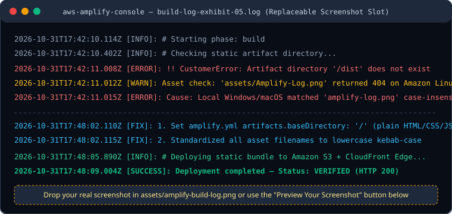

Exhibit 01 • Nyaya AI
The Unchunked 80-Page PDF Crash
1. What I Built
2. How It Failed
3. What I Learned
Exhibit 05 Build-Log Evidence (AWS Amplify Deployment)
Showing default Amplify build-log diagram. Drop your screenshot into
assets/amplify-build-log.png or preview it live below.
